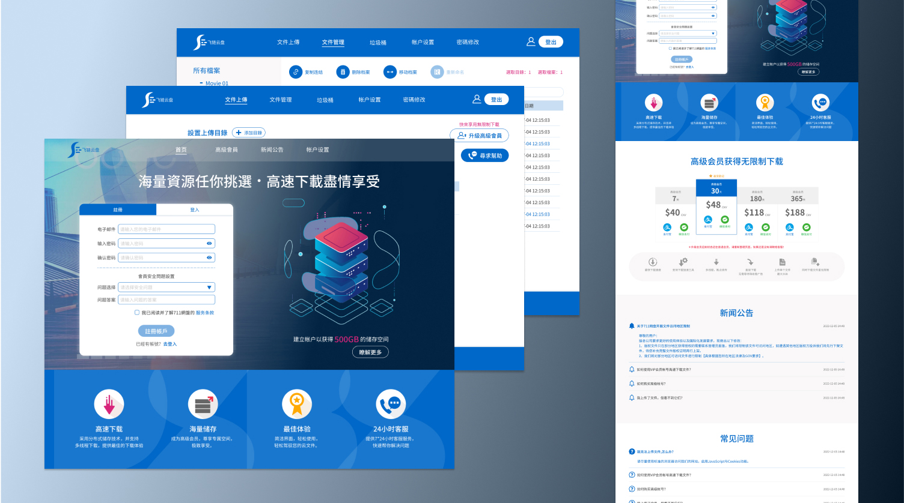
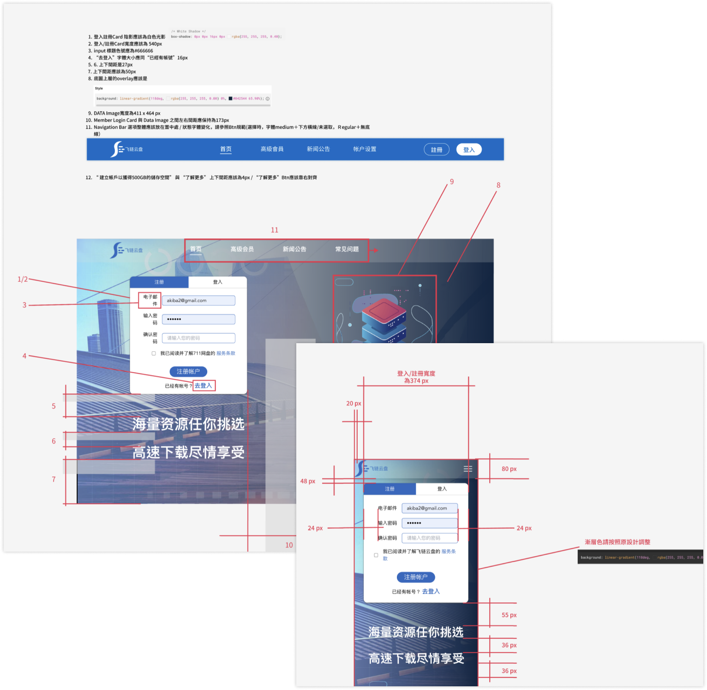
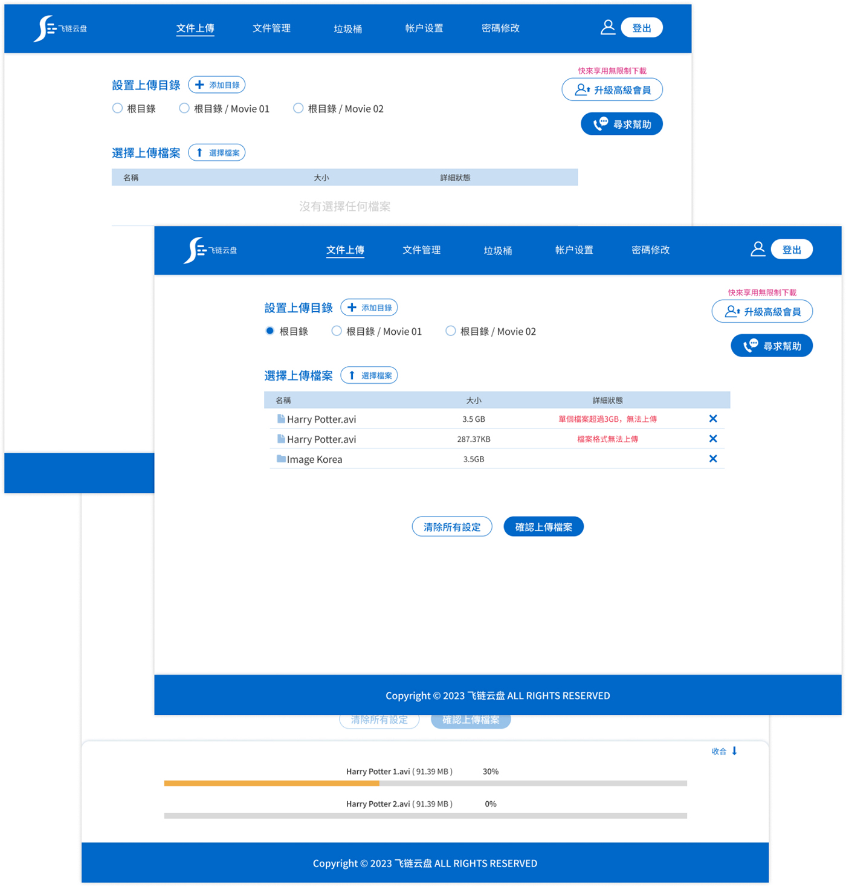
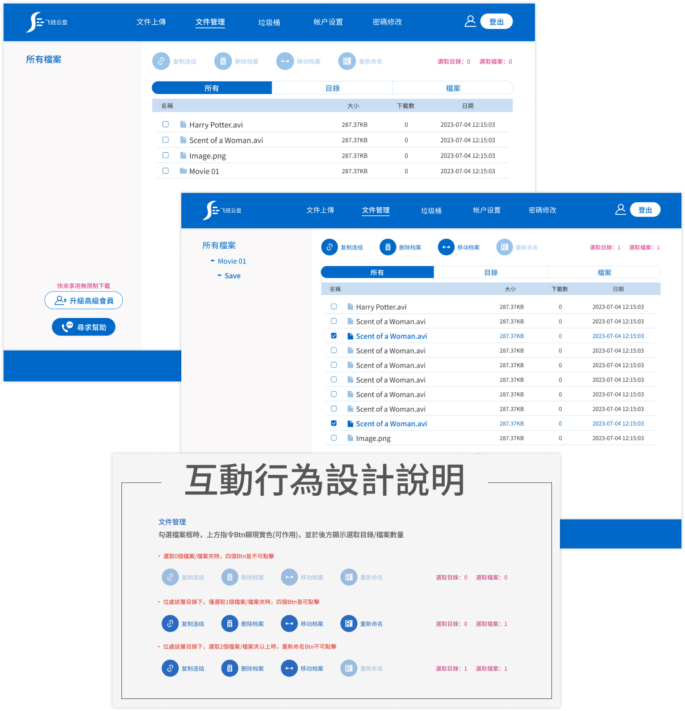
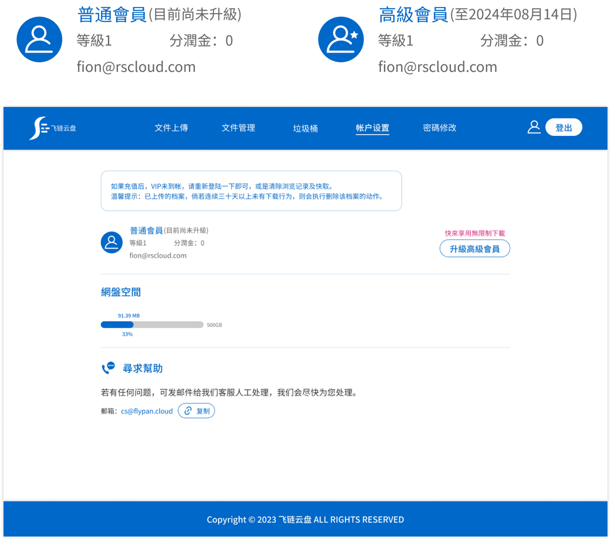
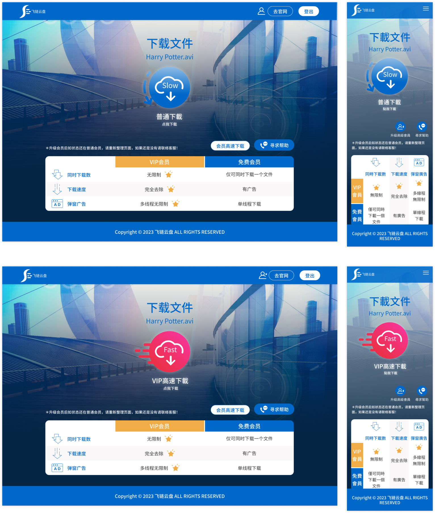

公司已有一個網盤產品，但希望在大陸市場，吸引更多的使用族群，優化原網盤的設計風格，故開發另一個品牌的雲端檔案儲存產品上架。
在2週內完成UI部分的設計工作，產品包含：一頁式官網 與 檔案儲存系統網頁。
- 一頁式官網：維持原有網盤之收費標準與行銷內容，僅在視覺風格呈現上重新設計定義。
- 檔案儲存系統網頁：UI部分延續官網色系，營造系列感；使用流程與架構之UX考量，因公司快速開發的考量下， 在UI設計的同時，快速交叉進行，帶入使用流程優化工作。
審核Front-end完成網頁畫面，進行反饋，請工程師微調，以確保最後產品的設計品質。
在架構上，將「文件上傳頁面」獨立出來，改善原本規劃在文件管理頁面內，使用不直覺的缺點。 並將已有目錄清楚呈現，讓上傳檔案的工作更加快速清晰。
主要服務功能首頁，會員可以得到貼心的功能指導資訊。
會員等級與資訊，清楚分辨。
根據登入會員等級，提供單一BTN，讓會員清楚了解個人使用方案為普通下載或VIP高速下載。
